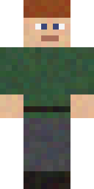
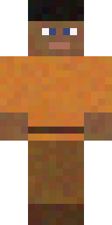
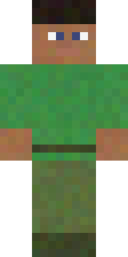
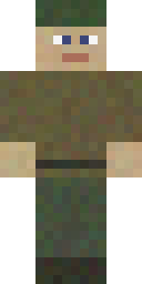

Eva Mod
Neighbors for your world
Homestead 2.1 — real biome villagers, oak cottages, towns, and memory.
2.1.0 Homestead Minecraft 26.2 · NeoForge · 1.x retired
Neighbors
Meet the folk
Same skins you meet in-game — one look per biome.
- Plains
- Desert

Taiga- Snowy

Savanna
Jungle
Swamp
Archive
Releases
Ritual
Install
-
01
NeoForge
Install NeoForge for Minecraft 26.2.
-
02
The jar
Drop
evamod-2.1.0.jarinto.minecraft/mods. -
03
Arrive
Launch. Open the Homestead Primer — your map to towns and neighbors.